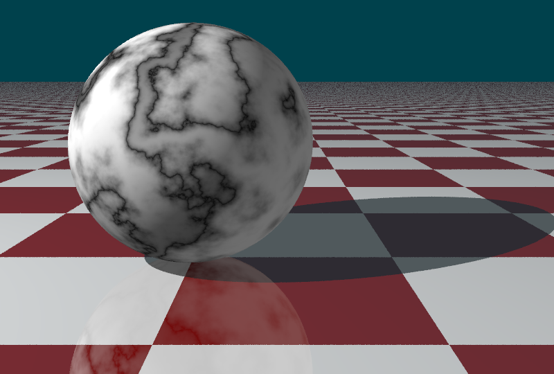
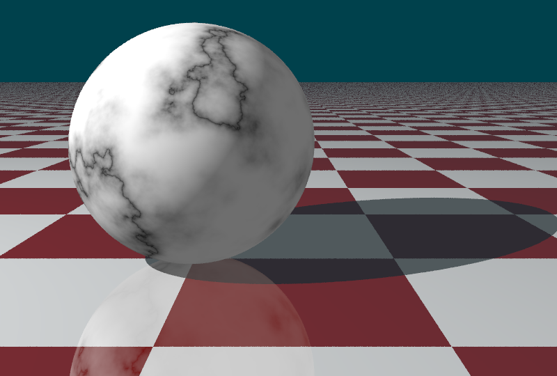
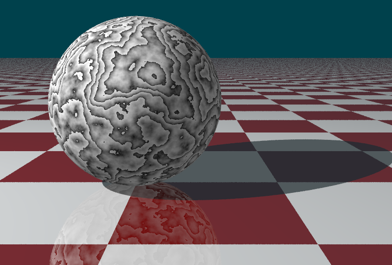
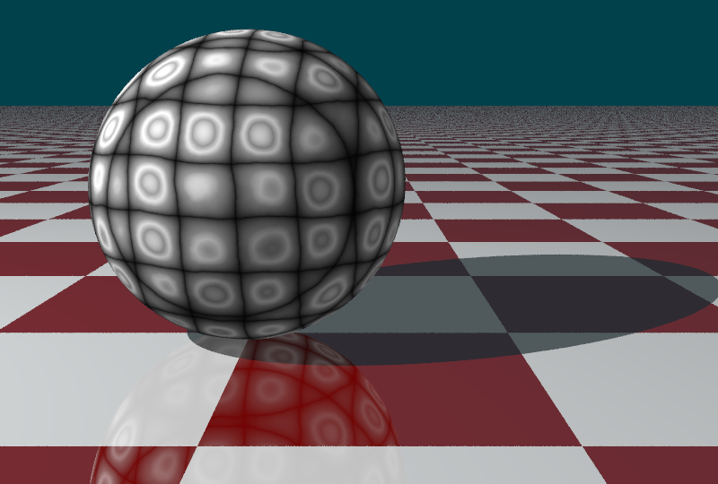
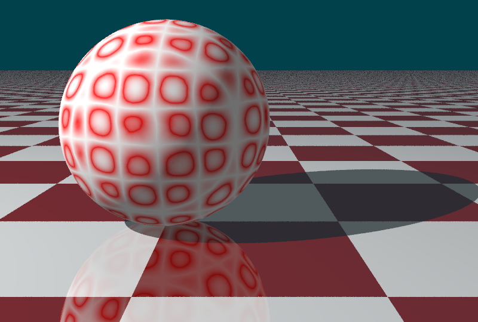

Procedurálna šumová textúra
Domáca úloha NPGR004 : Róbert Eckhaus
Vyrenderované obrázky:
Mramor: vzniká veľmi silnou perturbáciou úzkej tmavej línie, napr. sinusoidy (vľavo hore), alebo mriežky (vpravo hore). Použitím desatinnej časti súradníc zas dostaneme veľmi ostré hrany (dolu).
\(N\) v vzorcoch označuje 3D šumovú funkciu, \(frac\) je desatinná časť čísla. Ostatné parametre sú popísané nižšie.



Mapovanie škály farieb
Vpravo hore: {#FFFFFF, #FF0000, #FFFFFF}
Vľavo hore: {#000, #333, #666, #EEE, #666, #FFF}
Dolu: {#00000, #FFFFFF}



Textúry (+ interaktívne skripty v processing.js)
kliknutím na textúru sa zmenia parametre podľa súradníc myši.
Mramor:
$$B(x,y) = \sin\left(\pi\left|\frac{x\cdot P_x}{W} + \frac{y\cdot P_y}{H} + P \cdot noise(x,y)\right|\right)^E$$
kde jednotlivé premenné sú:
- \(W\) = šírka patternu = \(5.0\)
- \(H\) = výška patternu = \(5.0\)
- \(P_x\) = horizontálna frekvencia = \(1.0\)
- \(P_y\) = vertikálna frekvencia = \(1.0\)
- \(S\) = sila šumu = x-ová súradnica myši
- \(E\) = exponent = y-ová súradnica myši
Zašumené dlaždice:
$$B(x,y) = |\cos(x+P\cdot noise(x,y))\cdot \sin(y+P\cdot noise(x,y))|^E$$